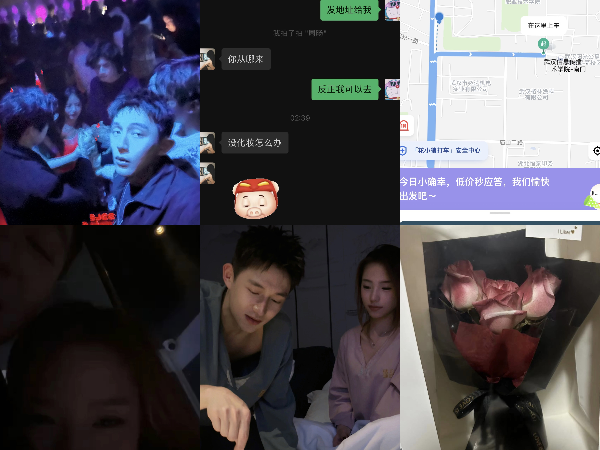

日记开端
日记开端

这六张照片记录着我们故事的开端，那我便将它们作为我们日记的开头。
P1:连我自己都没想到我会和你有这样的一张合影,在middle正式一起玩的第一天,当举起手机记录下这一瞬间，或许缘分就已经将我们刻印在了同个相框之中。
P2:这是我们为数不长暧昧期的聊天记录，从地堡跑去找你，一起吃了个夜宵，那天我们都没喝多，聊了很多，抱着睡了一觉（也就只有那时候睡觉你不会赶我走）。
P3:第一次打车到你们学校的截图,当时真没想到这个地址居然会变成打开滴滴出行立刻就弹出的默认地址(以前都是xxdb哈哈哈哈),这或许就是命运齿轮转动的第一下。
P4:去找你就是为了和你一起去middle,这是在你喝多了去酒店的合照,这是我第二次主动和你拍合照,第一次拍的被你逼着删掉了(你断片那次是拍的第一次)。
P5:这个时候我们已经正式在一起了,但是时间还不长,也是你陪我过的第一个生日,以后可以多陪我过几个吗,偷偷告诉你,生日许的愿望还和你有关,可见当时真的已经很喜欢你了!
P6:我的初恋可以开始得草率,但一定不能没有仪式感,不然怎么对得起浪漫的双鱼座呢,好的恋爱一定是从一束花和一段告白开始的,告白当时就和你说了,
花肯定也不会少啦!(这可是我自己做的呢!)。
不知道这六张照片背后的故事你还记不记得,你说歌是记忆的载体,照片当然也是!希望我们以后会有越来越的承载我们回忆的照片！
在这一面的最后,我也要说,你知道的,我没怎么学习,所以页面比较简陋,不能攻击作者噢!
（接下来请点击最上面一栏的旅行日记，跟着我一起进入我们的故事的下一篇章！）